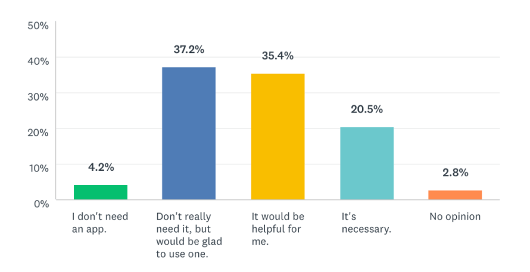
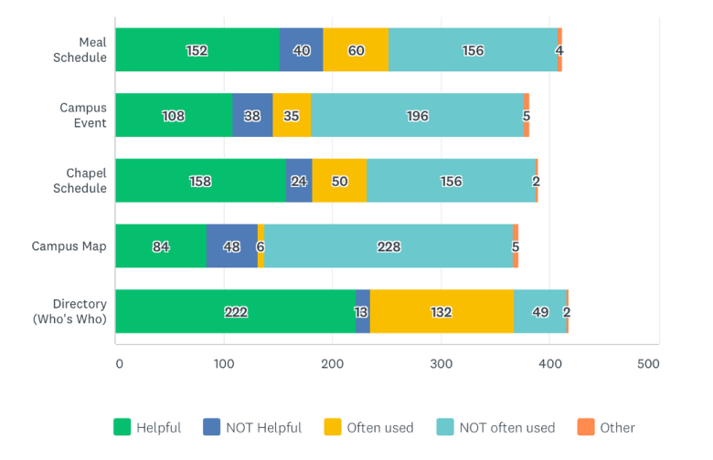
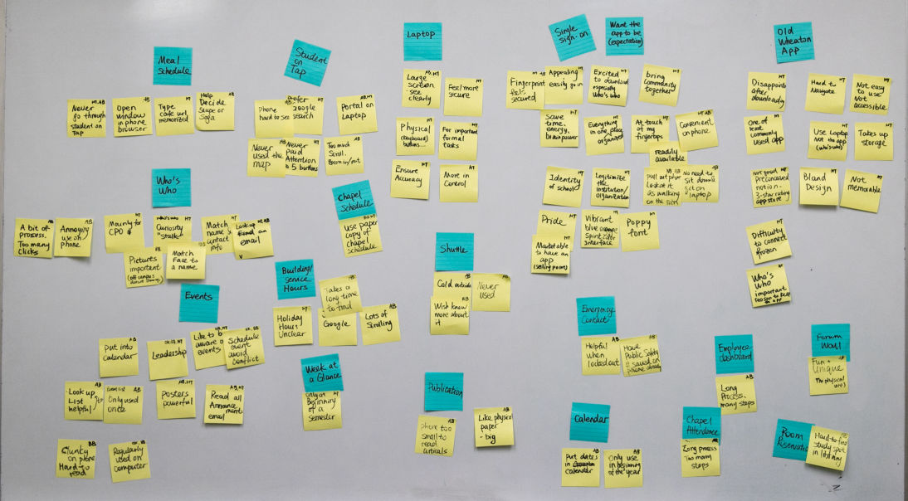
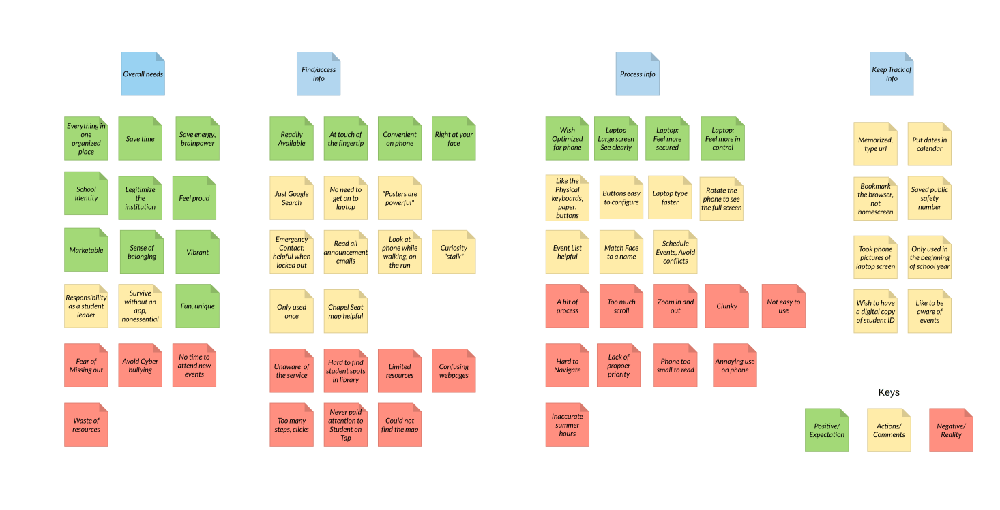
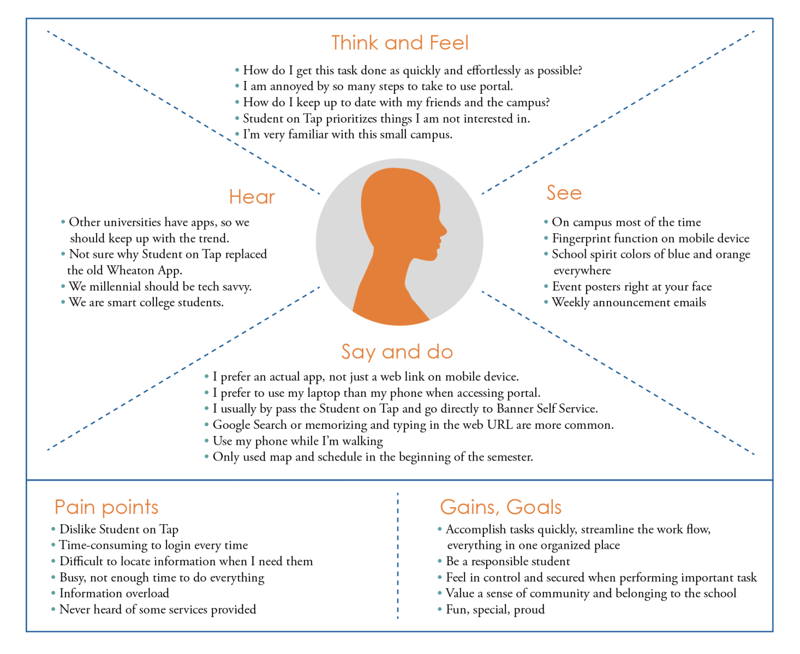
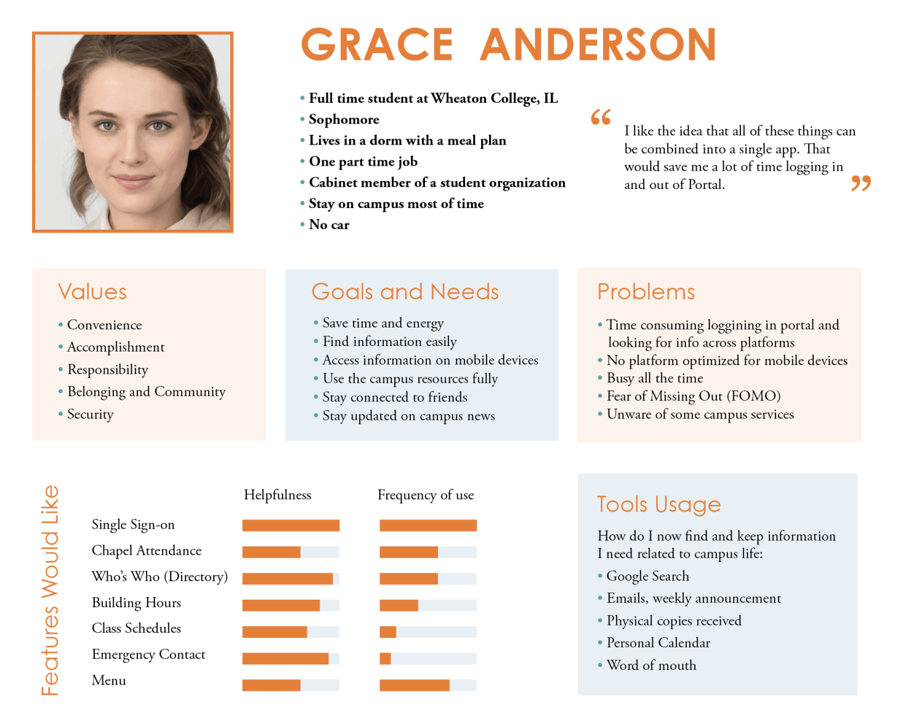

Part One: Research (Current Page)
(1) User Research and Synthesis:
Through Secondary Research, Research Survey, and User Interview, I made Affinity Maps, Emphathy Maps, Personas, and HMW Statements. >View
An app for college students
My very first UX project
Jan, Feb, June 2020
Wheaton Mobile is an app for Wheaton College (IL) students that aims to provide a platform where the users can efficiently get access to Wheaton College related resources and information that they often use.
This is a one-person end to end product launch project. I created the app from scratch on my own in order to improve upon the current platforms that are not designed for mobile experiences.
The Problem
Student Portal is where the students and employees can get access to all the important college-related information, such as course registration, payroll, and school calendar. However, it is not optimized for mobile devices at all and takes multiple steps to get to relevant functions.
So for the past two years, the Student Government has been receiving requests from the student body to redesign the student portal and/or bring back the old mobile app.
The official solution has been “Student on Tap.” It is just the front page of the portal website, and the users could save the link as a bookmark that looks like an app to their mobile device. It is an easy and low budget solution but has not solved many of the problems such as the lack of responsive design for mobile devices and inefficient navigation.
Research and design an app where the students can easily get access to the features they need the most.
(One person project)
UX Researcher and Designer,
UI Designer
3 months
Sketch App
Marvel
Invision
I don't get to decide the process and methodology
The primary purpose of this project for me was to learn all the steps of UX. The process is outlined by the curriculum I'm taking. I can't skip any step.

(1) User Research and Synthesis:
Through Secondary Research, Research Survey, and User Interview, I made Affinity Maps, Emphathy Maps, Personas, and HMW Statements. >View
(2) Design and Ideate: User Stories, User Flows, and Sitemaps.
(3) Sketch and Wireframe: Red Routes, Guerilla Usability Testing, Wireframes, and Wireflows. >View
(4) Design System and High Fidelity Mockups with animation.
(5) Prototype and Usability Testing. >View
What do I want to discover? – Research Questions
1. What are the undergraduate students’ opinions and experiences of the current platforms (Wheaton Portal and Student on Tap)?
2. Do students need a stand-alone mobile app? Why or Why not?
3. What are some of the top functions/features students wish to include in the potential mobile app? Why?
How can I assess the opinions of the majority users? – Quantitive Survey
The goal of the Research Survey is to access general opinions, get quantitative data, and recruit interview participants. It is a complement to the in-depth interview I would do next.
about "Student on Tap" usability and functions; Desires and Opinions for a new Wheaton App
Out of ~ 2400 undergraduate students
The survey included a free comment section for each question
Quantitive Survey - Results Highlights
Almost all the students who left a comment in the survey expressed frustrations with the current platforms and hope to have an app that combines all the features they use often.
Top “Crucial to include” Features :
1. Single sign-on (70%)
2. Chapel Attendance (56%)
3. Directory (53%)
4. Building and Service Hours (41%)
5. Emergency Contact (40%)
6. Class Schedules (39%)
7. Menu (37%)
8. Chapel Seat Map (27%)
Top percentages “Quite helpful” Features:
1. Chapel Schedule (44%)
2. Building and Service Hours (43%)
3. Event (41%)
4. Announcement (40%)
5. Academic/Housing Calendar (37%)
6. Chapel Attendance (36%)
7. Menu (35%)
8. Class Schedules (34%)

Question: “How much do you feel the need for a stand-alone Wheaton mobile app (in addition to the Student on Tap mobile website)?

Question: “What's your opinion of the following functions of Student on Tap?”
How do I better understand the survey response? – User Interview
I interviewed 5 users (4 in-person, and 1 remote). A total of 160 minutes of interview time.
Sample Questions
What do you use … for? Could you walk me through your process of using…? (Menu Schedule, Who’s Who, Chapel Schedule, etc.)
On the survey, you said it’s crucial to include … feature. Could you tell me why?
How do you usually access these links? From Student on Tap or somewhere else?
Do you usually use your phone or laptop to access this feature?
How do you find out about new campus events and keep track of them?
How do you check your class schedules at the beginning of every semester?
What did I learn? — Research Synthesis: Affinity Maps
In order to see trends among the qualitative information collected from different users, I made four iterations of the Affinity map.
Following are the examples of the first version and the final version.
Affinity Map First Version
The notes are users’ opinions of and experiences with Student on Tap and its features.
Grouped based on interview questions, such as "Existing Student on Tap features" and "Daily campus-related activities"
Problems:
Too many categories, too scattered
Not able to generate cohesive insights about the product as a whole

The second version was grouped based on users’ process of using Student on Tap, such as How did they find the info they need, How did they process the info they find, How did they keep the info they process.
Problems: Trouble defining positive or negative; Some notes could belong to multiple categories; Many in “find info” but not much in other categories
The third version was based on modified steps for Behavior Design:
1. Cue (How did users notice the activity/feature/task?)
2. Reaction (What did users do or say?)
3. Evaluation (How did the users feel?)
4. Consequence (What did the feature/action result in?)
5. Timing (How often and when?)
Problems: Many extra notes did not fit into this model
Affinity Map – Fourth and Final Version

This map shows the postive and negative expectations and reactions users have when they interact with Wheaton Portal and Student on Tap, including how they find, process, and keep tract of the information they need.
What did I learn? — Research Synthesis: Empathy Map
I made the empathy map in order to visually organize the insights, observations, and quotes that I have collected from the research to better understand the user’s pain points, goals, feelings, thoughts, and behaviors.

What did I learn? — Research Synthesis: Persona
I created a user persona that helped me to make user-centered decisions during the next steps of my design process. Even though a persona is depicted as one person, it’s actually a synthesis of the observations and analysis I have recorded of many different users.
I chose to only make one persona for now because all the users I researched have needs similar enough to be grouped together.

Summary of What I Learned — Research Synthesis: How Might We (HMW) Statements
1. How might we help Wheaton College students find information related to campus activities easily?
2. How might we make some features more readily available and accessible on mobile devices?
3. How might we make students more aware of campus resources that they might want to use?
Product/UX/UIDesigner based in Virginia.
Email: daini.eades@gmail.com